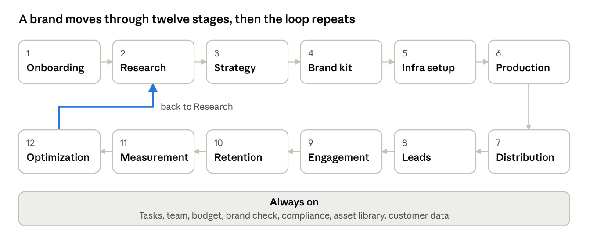
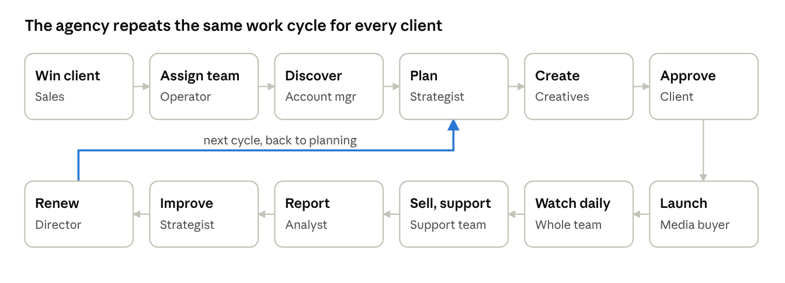
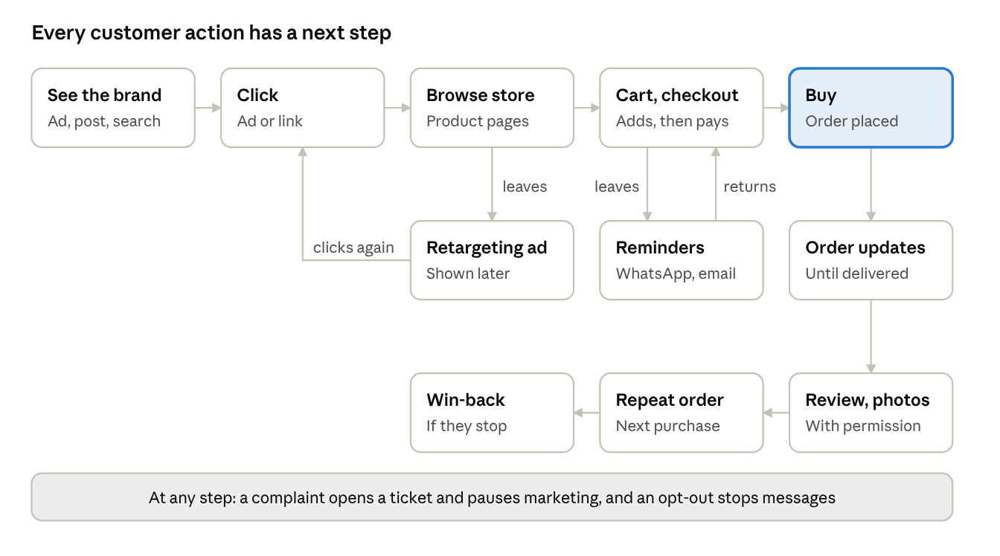

Marketing OS: brand journey and agency workflow
Date: 2026-11-01
Scope: the planned platform, from the Simple SRS and the HLD, MLD, LLD docs. The product is not built yet.
Simple SRS
1. What we offer
Marketing OS is one platform where a marketing agency runs everything it does for its clients. The agency needs no other marketing tool.
Who logs in: only agency staff. Clients and their customers never log in.
What agencies do for a brand:
| Job | What it means | What the platform gives |
|---|---|---|
| Marketing | Make customers aware of the brand | Social posting, SEO, content, creators, PR |
| Advertising | Push products so customers buy | Ad accounts, campaigns, testing, marketplaces |
| Sales | Turn leads into sales | Lead tracking, cart recovery, AI chat and calling |
| Retention | Bring customers back to buy again | Cross-sell, up-sell, loyalty, referrals, win-back |
| Customer support | Help customers with orders and problems | AI chat, voice agent, one inbox, tickets, surveys |
| Social media | Run the brand's accounts and track how they do | Posting, replies, account management, social analysis |
| Commerce | Run the brand's store and track how it sells | Store audit, products, orders, returns, sales analysis |
The agency also has to run itself, so the platform covers that too: winning clients, managing staff, tasks, access and invoices.
How a client works with us: the client signs, answers our questions, gives us access to their accounts, approves work by link or WhatsApp, and receives reports and invoices. That is all they ever do.
Workspaces: who gets in, when and for what
A workspace is the private space for one client. It holds that brand's profile, strategy, content, campaigns, customers and reports. Staff enter only the workspaces they are assigned to.
Who can access what
| Person | Which workspaces | What they use it for |
|---|---|---|
| Agency owner or operator | All | See every client, assign teams, set access |
| Account manager | Assigned clients | Run the client, send approvals and reports |
| Strategist | Assigned clients | Research, ICPs, strategy, funnel |
| Creative team | Assigned clients | Brand kit, content, assets |
| Media buyer | Assigned clients | Ads, testing, budgets within limits |
| Channel specialists | Assigned clients | Social, SEO, email, SMS, WhatsApp |
| Sales and support agents | Assigned clients | Leads, inbox, tickets |
| Analyst | Assigned clients | Dashboards and reports |
| Project manager | Assigned clients | Tasks, deadlines, workload |
| Finance | All, billing only | Invoices, payments, profit |
| Freelancer | Assigned tasks only | Their own tasks, until the work ends |
| Client | None | Uses links, email and WhatsApp instead |
| Customer | None | Sees only messages, chat and calls |
When access starts and ends
| Moment | What happens |
|---|---|
| Deal is won | The workspace is created. Only owners and operators can enter. |
| Team is assigned | That team can enter and start work. |
| Someone joins for a short time | An operator gives access that ends on a set date. |
| Someone leaves the team | Their access ends at once. |
| Client pauses | Campaigns stop. The team can still view the workspace. |
| Client leaves | Staff access ends, the client's data is exported, and the workspace is archived. Only owners and operators can open an archive. |
Extra protection inside a workspace
Each role sees only the tools it needs.
Customer contact details are hidden from staff who don't need them.
Profit and salary details are limited to leaders and finance.
The activity log records who opened or changed what.
What staff see when they log in
They see My workspaces: the list of client workspaces assigned to them.
They click a workspace.
They see that client's tasks on a kanban board, with columns for To do, In progress, In review, Waiting on client and Done.
They open a task, do the work and move the card along the board.
Staff see their own tasks first. Managers see every task and who is running late.
2. The client journey
A brand goes through 12 stages in order. After stage 12, the loop returns to stage 2 and repeats.
Before stage 1: Winning the client
Agency does: finds the lead, holds a sales call, sends a proposal and contract.
Client does: agrees and signs.
Tools that help: Sales pipeline tracks each deal and forecasts sales, and creates the proposal and contract.
Done when: the deal is won. The platform then creates the client and their workspace.
Stage 1: Brand onboarding and discovery (weeks 1 to 2)
The agency learns everything about the brand before doing any marketing. This stage has five steps.
Step 1: Kickoff call. The agency meets the founder or marketing team. Together they agree goals, the team, who approves work, and how often they talk. Journey tracker records this and shows what comes next.
Step 2: Brand discovery. The agency fills in a full brand profile, using a form the client completes by link and a discovery call. Discovery form keeps all the answers in one place.
| Area | What the agency finds out |
|---|---|
| Business | Business type (B2B, B2C, D2C, local, SaaS, e-commerce), model, where they sell |
| Products | Product list, hero products, pricing, margins, stock |
| Goals | Revenue targets, growth plans, launches, new markets |
| Customers | Who buys today, who they want, why people buy, why people leave |
| Brand | Story, values, voice, logo, colours, fonts, what makes them different |
| Assets | Past campaigns, photos, videos, website, social accounts |
| Past results | What worked, what failed, past ad spend, sales history |
| Competitors | Who they compete with and how they compare |
| Limits | Budget, team, timeline, legal and industry rules |
Step 3: Getting access. The client gives access to every place the brand exists. Connections links each account and shows what is still pending.
| Place | Examples |
|---|---|
| Stores | Shopify, Instagram store, own website |
| Marketplaces | Amazon, Flipkart, Meesho, Myntra |
| Social accounts | Instagram, Facebook, YouTube, LinkedIn |
| Ad accounts | Meta, Google, Amazon |
| Data tools | Google Analytics, Search Console, Tag Manager, Merchant Center |
| Messaging | Email domain, WhatsApp, SMS |
Step 4: Audit. The agency checks how the brand is doing today, and finds what is broken and what is working. Audit tool runs these checks and lists what to fix.
| Audit | What gets checked |
|---|---|
| Store performance | Page speed on phone and desktop, mobile use, images, apps that slow the store |
| SEO | Titles, descriptions, indexing, sitemaps, schema, broken links, product and collection pages |
| GEO and AEO | Do AI tools and search answers name the brand? Which rivals and sources do they name? Can AI read the site easily? |
| Conversion | Product pages, cart, checkout, trust, offers |
| Tracking | Is the data correct, or leaking? |
| Ads | Past spend, what made money, what wasted money |
| Email and SMS | Past revenue, flows in place |
| Social | Followers, engagement, best posts |
| Reviews | Ratings and what customers complain about |
| Marketplaces | Listings, ratings, sales |
Store audit scores the store on performance, SEO, GEO, AEO and conversion, and gives it one overall grade. For each problem it shows why it matters, who should fix it and how long the fix takes. Staff can download the report, share it with the client, and run the audit again to see the score move.
Step 5: Brand knowledge. All findings go into one brand knowledge base. It gives staff and AI one set of facts to work from.
Client does: joins the call, fills the form, gives access, shares assets.
Tools that help: Discovery form, Connections, Audit tool, Store audit and Brand knowledge base turn scattered information into one brand profile.
Done when: the client confirms the brand profile and audit are correct.
Stage 2: Research (weeks 1 to 2)
Agency does: studies the market, competitors and customers, then finds opportunities. This covers market size, trends, seasonality and demand, competitor pricing, ads and gaps, keyword and search intent research, social listening and a SWOT analysis. A SWOT lists the brand's Strengths, Weaknesses, Opportunities and Threats.
Agency builds: the Ideal Customer Profile (ICP), which describes the best buyers. It also builds buyer personas, with demographics, psychographics (values and lifestyle), pain points, objections and buying triggers. It maps how customers discover, compare, buy and return.
Client does: reviews and confirms the ICP.
Tools that help: Research workspace gathers findings, Competitor tracker compares rivals, ICP builder defines the best buyers, and AI summarises it all.
Done when: the insights report and ICP are approved.
Stage 3: Strategy (weeks 2 to 3)
The agency decides how to market the brand.
| Decision | The question it answers |
|---|---|
| Positioning | Who is this for, and why is it different? |
| Message | What is our value proposition, what do we say to each persona, and what proof backs it? |
| Goals | What are our SMART goals, north-star metric and KPIs by funnel stage? |
| Funnel | How do people move from awareness to buying again? |
| Channels and mediums | Where do we show up, and why? |
| Demography | Which ages, cities and languages? |
| Content | What themes and formats? |
| Offers | Which discounts, bundles, gifts, free trials or lead magnets, and is there still profit? |
| Budget | How much goes where, and when? |
| Calendar | Which campaigns, launches and festivals? |
| Go-to-market plan | How do we launch a new product or brand? |
| Customer journeys | What path does each customer take, from first ad to repeat order? |
Client does: reviews and signs off the strategy.
Tools that help: Strategy builder records decisions, Profit calculator checks they make money, Budget planner splits spend, Marketing calendar sets dates, and Journey builder maps the path each customer takes.
Done when: the client signs the plan. All later work must follow it.
Stage 4: Brand kit (weeks 3 to 4)
Agency does: sets brand guidelines (logo use, colours, typography, imagery), voice, 3 to 6 content pillars, and templates for posts, ads, emails and presentations. It also fills the asset library with images, videos, logos and product shots.
Client does: approves the kit.
Tools that help: Brand kit keeps all work on-brand, and Asset library keeps every file easy to find.
Done when: the kit is approved.
Stage 5: Infrastructure setup (weeks 2 to 4)
Access came in stage 1. This stage makes everything work.
Agency does: adds tracking to the site (analytics, GTM, pixels, meta tags, conversion events), and sets UTM link rules. It also fixes technical SEO (site speed, indexing, schema, sitemaps), builds landing pages, sets up sender domains, SMS and WhatsApp senders and contact lists, imports customers into the CRM, verifies business accounts, updates business listings such as Google Business Profile, and adds cookie consent, a privacy policy and opt-ins under laws such as DPDP, GDPR and CAN-SPAM.
Client does: approves anything needing the owner, such as a business verification.
Tools that help: Setup checklist shows what is left, tracking checker proves the data is right, and landing page builder makes pages that sell.
Done when: a test proves that tracking, sending and posting all work.
Stage 6: Production (weeks 3 to 4, then ongoing)
What counts as a campaign: any planned push to an audience, on one channel or many. Ads are only one type.
| Campaign type | Example |
|---|---|
| Ads | Meta, Google or marketplace ads |
| Broadcast | A festival offer sent by WhatsApp, SMS, RCS or email |
| Automated flow | Abandoned cart reminders, welcome series, win-back |
| Voice | AI agent calls for follow-ups |
| Mixed | Ads, WhatsApp and email together for one launch |
| Customer journey | A full path across ads, pages and messages, with a next step for each customer action |
Every campaign has the same parts: goal, audience, channels, content, budget, dates and results.
Agency does: writes the campaign brief and content calendar, then creates copy (ads, captions, blogs, emails, scripts), designs (posts, carousels, banners, infographics), videos (reels, shorts, ads, explainers, testimonials) and long-form content (guides, whitepapers, case studies, ebooks). AI resizes each piece for every platform and handles translation. Each piece passes a brand check, a legal check and sign-off before scheduling.
Client does: approves work by link or WhatsApp when needed.
Tools that help: Campaigns plans the work, Journey builder sets what each customer sees next, Content studio and AI editor speed it up, Language generator makes versions for each audience, and Approvals gets sign-off.
Done when: content is approved and scheduled.
Stage 7: Distribution (month 1, then ongoing)
The agency puts the brand in front of customers.
| Type | Channels |
|---|---|
| Owned | Website, blog, email newsletters, SMS, WhatsApp, RCS, push, in-app messages, organic social (posts, stories, reels, threads) |
| Paid | Search (Google, Bing), social (Meta, LinkedIn, YouTube, X, Snapchat, and TikTok where allowed), display and programmatic, retargeting, marketplace ads, affiliates, offline (print, outdoor, radio, TV) |
| Earned | PR and media outreach, influencers and creators, reviews and ratings, partnerships and co-marketing, community and word of mouth |
| Events | Webinars, live sessions, trade shows, local events |
Agency does: posts content, launches campaigns on each channel, tests ads on small budgets, works with creators, and checks results daily.
Client does: approves budget changes when needed.
Tools that help: Social publisher posts content, Ads manager runs ads, Messaging sends campaigns, Creator manager handles creators, PR and events tracks press, and Social analytics shows how posts and accounts perform.
Done when: campaigns are live and tracked.
Stage 8: Leads and sales (month 1, then ongoing)
A lead is anyone showing interest: a store visitor, a CTA click, a left cart, a comment or a question.
Agency does: captures leads from forms, chat, landing pages, calls and DMs. It adds missing details (enrichment), uses lead scoring by fit and behaviour, then nurtures them and follows up. It recovers abandoned carts, improves pages and checkout, and hands big deals to a salesperson.
Tools that help: Lead tracker shows every lead and its status on a kanban board, Automation builder follows up on its own, AI chat bot and voice agent answer at once, and heatmaps and A/B tests show what to fix.
Done when: the lead buys, or is marked lost.
Lead status. Each lead is a card on the kanban board, in the column for its status. Cards move on their own when the customer acts, and staff can drag them by hand. Each card shows the name, source, score, owner and last contact.
| Status | What it means |
|---|---|
| New | The lead just came in |
| Contacted | A reply or reminder has gone out |
| Interested | They replied, clicked or asked a question |
| Qualified | They fit well and are ready to buy |
| Cart or offer | They have a live cart or an offer |
| Won | They bought |
| Lost | They are not buying, with the reason saved |
Stage 9: Engagement (daily)
Agency does: replies to comments, DMs and mentions, asks for reviews, reposts customer content, tracks sentiment, handles complaints and crises, and builds community.
Tools that help: One inbox holds every message, AI drafts replies with a manual option, Reviews collects feedback, Customer content library keeps customer photos and videos, Sentiment tracking shows the mood, and Support tickets stop problems getting lost.
Done when: the customer has an answer, or the ticket is closed.
Stage 10: Retention (ongoing)
Agency does: runs welcome, activation, repeat purchase, up-sell, cross-sell, renewal and win-back flows. It also runs loyalty and referral programmes, collects surveys and testimonials, and turns happy customers into advocates. Feedback goes back into research.
Tools that help: Lifecycle flows bring customers back, Loyalty and referrals reward them, Surveys show how they feel, and Customer profiles show their history.
Done when: the customer buys again.
Stage 11: Measurement (daily, weekly, monthly, quarterly)
Agency does: tracks results by channel, tracks store, social, support and customer behaviour, finds what drove sales, benchmarks against competitors over time, and sends reports.
Client does: reads reports and joins review calls.
Tools that help: Dashboards show live results, Reports go out on schedule, Attribution shows what drove sales, and Competitor tracker shows how the brand compares.
Done when: the report is sent and reviewed.
Stage 12: Optimization (ongoing)
Agency does: runs A/B and multivariate tests on creatives, copy, audiences, landing pages and subject lines, refines audiences and keywords, moves budget to what works, refreshes tired ads, fixes store audit issues, and scales winners slowly.
Tools that help: Testing shows what works, budget suggestions move money to winners, and What worked library saves the learning.
Done when: the learning is saved and fed into the next round of research and strategy.
3. The customer journey
The client journey shows how a brand moves through the agency. The customer journey shows how one customer moves through the brand: where they see it, what they click, and what happens after each action.
Staff build these in Journey builder. Each journey runs as a campaign.
Two ways to start
Use a template: pick a ready-made journey, then change the audience, wording and timing for the brand.
Design a new one: start blank and add each step by hand, or describe it to AI and edit the draft.
Ready-made templates
| Journey | Who it is for | Where it starts | Goal |
|---|---|---|---|
| New customer | People who don't know the brand | Ad, reel, creator or search | First order |
| Abandoned cart | People who left items in a cart | Cart left on the store | Finish the order |
| Left at checkout | People who left during checkout | Checkout page closed | Finish the order |
| Welcome | First-time buyers | First order or signup | Second order |
| Order updates | Every buyer | Order placed | Fewer "where is my order" questions |
| Issue resolution | Customers with a problem | Complaint on any channel | Problem solved, customer happy |
| Review and customer content | Happy buyers | Order delivered | A review, photo or video |
| Repeat order | Past buyers | Product is due to run out | Next order |
| Win-back | Customers who stopped buying | No order for a set time | Customer returns |
| Campaign launch | The whole audience | First ad or message | The campaign's goal |
What a journey is made of
| Part | What it means | Example |
|---|---|---|
| Start | What puts a customer in the journey | Clicks an ad, leaves a cart |
| Touchpoint | Where the customer sees the brand | Instagram ad, WhatsApp message, product page |
| Customer action | What the customer does next | Clicks, replies, buys, leaves, does nothing |
| Wait | How long the journey holds | 30 minutes, 1 day |
| Decision | Which way the journey goes | Did they buy? Did they consent? |
| End | When the journey stops | They bought, opted out or finished the last step |
How a campaign runs for one customer
This example is a festival offer. The journey shows the path the customer takes, not only what the agency sends.
| Step | Where the customer is | What they see | What they do | What happens next |
|---|---|---|---|---|
| 1 | A reel ad with the offer | Clicks the ad | The product page opens, and the visit is tied to that ad | |
| 2 | Product page | Product, price, reviews | Adds to cart | They appear as a lead on the board |
| 3 | Checkout page | Address and payment | Leaves the page | The left-at-checkout steps start |
| 4 | A reminder with a link back to the cart | Clicks the link | Their cart opens, ready to pay | |
| 5 | Checkout page | Their saved cart | Pays | The journey ends and order updates start |
What happens after each action
| If the customer | The journey |
|---|---|
| Sees an ad but doesn't click | Shows a different ad later, within a set limit |
| Clicks but leaves the product page | Shows a retargeting ad, and sends a reminder if the customer is known |
| Adds to cart and leaves | Sends a reminder after a short wait |
| Leaves on the checkout page | Sends a WhatsApp reminder after 30 minutes, an email after 4 hours, and an offer after 24 hours if the margin allows |
| Has a failed payment | Sends a new payment link and offers help |
| Asks a question | Lets AI answer, passes it to staff if needed, and holds the next step |
| Complains | Opens a ticket and pauses marketing messages until it is solved |
| Buys | Ends this journey and starts order updates |
| Opts out | Stops messages at once |
| Does nothing after the last step | Ends, and marks the customer for a later win-back |
The timings above are examples. Staff set them for each brand. The platform can only message customers it can identify and who gave consent. Everyone else sees retargeting ads only.
Bringing in a new customer
A person sees an ad, reel, creator post or search result.
They click and reach a landing page or product page.
A pop-up offers a first-order discount for their phone number or email.
A welcome message arrives with the code.
Reminders follow if they don't buy.
After the first order, they move to the welcome journey.
Resolving a customer's issue
A customer reports a problem on any channel.
The AI chat bot or voice agent reads the problem and looks up the order.
It solves simple cases, such as tracking a parcel.
Other cases become a ticket with an owner and a time limit.
Marketing messages pause until the ticket closes.
The team solves it and tells the customer.
The customer gets a CSAT survey.
A happy customer goes to the review journey. An unhappy one goes to a senior agent.
Building a journey
The team opens Journey builder and picks a template or a blank page.
It sets who enters the journey.
It adds touchpoints, waits and decisions.
It adds what happens after each customer action.
The platform warns about dead ends and missing consent.
Staff test it with a test customer.
The account manager approves it, and it goes live as a campaign.
The journey report shows how many people reach each step, and where they leave.
A journey that works can be saved as a template for other clients, without any customer data.
4. Running the brand every day
These six areas run all the time once a brand is live.
Customer support
| What the agency does | Tool |
|---|---|
| Answers questions on every channel | AI chat bot, AI voice agent, One inbox |
| Looks up orders, delivery, returns and refunds | Order help |
| Tracks each problem with an owner, priority and time limit | Support tickets |
| Moves hard cases to a senior agent, then the client | Support tickets |
| Keeps answers to common questions | Help center |
| Asks customers how it went | Surveys |
What gets tracked: first reply time, time to solve, open tickets, share solved by AI, CSAT and the most common problems.
Social media
| Part | What the agency does | Tool |
|---|---|---|
| Manage | Runs handles, profiles, bios, links and access. Plans and posts content. Replies to comments, mentions and DMs. | Social accounts, Social publisher, One inbox |
| Analyse | Finds the best posts, formats, times and topics. Compares the brand with rivals. | Social analytics, Competitor tracker |
| Track | Follows followers, reach, engagement, saves, shares, link clicks, leads, sales from social, and account health. | Social analytics, Dashboards and reports |
Commerce
| Part | What the agency does | Tool |
|---|---|---|
| Manage | Looks after products, prices, stock alerts, discounts, pop-ups, orders, COD and returns, with the client's approval. | Commerce manager, Offers, COD tools |
| Analyse | Audits the store. Finds best sellers, weak products, pricing gaps and why carts are left. | Store audit, Product and pricing analysis |
| Track | Follows orders, real revenue, AOV, conversion rate, left and recovered carts, repeat rate, returns and stock. | Commerce tracking, Dashboards and reports |
Customer behaviour
Behaviour tracking shows what customers do on the store, with cookie consent in place.
| What is tracked | How the team uses it |
|---|---|
| Traffic and where visitors came from | See which channels bring buyers |
| Each visit, step by step | See how real customers move through the store |
| Heatmaps of clicks and scrolling | Fix pages people ignore |
| Products viewed and added to cart | Choose what to push, and who to remind |
| Funnel and checkout drop-off | Find where people leave |
| Repeat visits and cohorts | See if customers come back |
This data updates lead scores and segments, and starts journeys.
Customer sentiment
Sentiment tracking shows how customers feel.
The platform reads comments, DMs, mentions, reviews, tickets, surveys and call summaries.
AI marks each one as positive, neutral or negative, with its topic and product.
Dashboards show the mood overall, per product and over time.
The platform alerts staff when negative mentions suddenly rise.
Staff reply, open a ticket or start the crisis plan.
Findings go into the customer report and the next round of research.
Customer-created content
Customer-created content (UGC) means photos, videos, reviews and posts made by customers.
The platform finds tagged posts, mentions and reviews with photos.
Staff pick the best ones.
The platform asks the customer for permission by DM or link.
Approved pieces go into the Customer content library, with their usage rights.
The team uses them in posts, ads and product pages, with credit to the customer.
The customer can get a reward through Loyalty and referrals.
Reports show which pieces drove sales.
5. Tools in the platform
These are all the tools staff use, grouped by what they help with.
Run the agency
| Tool | What it does |
|---|---|
| Sales pipeline | Tracks the agency's own leads for new clients, and forecasts sales |
| Client workspaces | Gives each client a separate, private space |
| Journey tracker | Shows which stage each client is at and what is blocked |
| Portfolio dashboard | Shows every client's health on one screen |
| Tasks and projects | Kanban boards for each workspace, milestones, calendars |
| Team | Staff, freelancers, workload, performance |
| Approvals | Sends work to clients and records their answer |
| Finance | Invoices, payments, spend, profit per client |
| Access control | Lets staff see only their assigned clients |
| Activity log | Records who did what, and when |
| Command Center | AI assistant that runs the platform by prompt, on the website and on WhatsApp |
| My workspaces | Lists each person's assigned workspaces, and opens that client's task board |
Know the brand
| Tool | What it does |
|---|---|
| Discovery form | Collects the brand profile from the client |
| Connections | Links stores, marketplaces, social and ad accounts |
| Audit tool | Checks store, SEO, tracking, ads and social |
| Brand knowledge base | Holds every fact about the brand |
| Research workspace | Holds market, keyword and customer research |
| Competitor tracker | Tracks rivals, compares them, and gives AI summaries |
| ICP builder | Defines the best buyers and personas |
| Store audit | Scores store performance, SEO, GEO, AEO and conversion, and lists each fix |
Plan
| Tool | What it does |
|---|---|
| Strategy builder | Records positioning, goals, channels and the funnel, with a funnel builder |
| Profit calculator | Shows margin and the ROAS needed to break even |
| Offers | Creates discounts and bundles, and protects margin |
| Budget planner | Splits money across channels and months |
| Marketing calendar | Plans campaigns, launches and festivals |
| Launch planner | Builds go-to-market plans, with timelines, checks and owners |
| Journey builder | Designs customer journeys, from templates or from scratch |
Create
| Tool | What it does |
|---|---|
| Brand kit | Holds guidelines, voice, content themes and templates |
| Asset library | Stores all images and videos, with usage rights |
| Campaigns | Creates any campaign across ads, email, SMS, WhatsApp, RCS and voice, with its brief, audience, budget and goals |
| Content studio | Drafts, versions, revisions and comments |
| AI editor | Quick edits, on phone or desktop |
| Language generator | Turns one approved creative into other languages and dialects |
Reach customers
| Tool | What it does |
|---|---|
| Social publisher | Posts reels and posts, and shows account insights |
| SEO tool | Handles SEO, AEO, GEO and blogs |
| Ads manager | Runs ad accounts and the ad side of campaigns, and tests and scales them |
| Marketplace manager | Runs Amazon ads, and imports reports from other marketplaces |
| Creator manager | Stores influencers and creators, handles outreach and negotiation, tracks projects, makes affiliate links |
| PR and events | Tracks press, partners and webinars |
| Social accounts | Manages each brand's handles: profile, bio, links, verification, access and account health |
| Social analytics | Shows how posts and accounts perform, and tracks growth |
| AI search tracker | Shows if AI tools name the brand, and which rivals and sources they name |
Sell and support
| Tool | What it does |
|---|---|
| Lead tracker | Shows each client's customer leads on a kanban board by status, such as store visitors, left carts and people sent a reminder, and scores them |
| Automation builder | Builds the automated flows inside a campaign, in a visual editor or by prompt |
| Messaging | Sends email, SMS, WhatsApp and RCS |
| AI chat bot | Answers on the website, WhatsApp and Instagram |
| AI voice agent | Takes and makes phone calls |
| One inbox | Holds all comments, DMs, mentions and chats |
| Support tickets | Tracks problems, with owners, priorities, time limits and escalations |
| COD tools | Confirms cash orders and reduces returned parcels |
| Order help | Looks up orders, delivery, returns and refunds for AI and staff |
| Help center | Holds answers to common customer questions |
| Commerce manager | Looks after products, prices, stock alerts, orders and returns |
Keep customers
| Tool | What it does |
|---|---|
| CRM and customer database | Keeps one profile per customer, with orders, messages and consent |
| Segments | Groups customers by behaviour and value |
| Lifecycle flows | Runs welcome, repeat, cross-sell, up-sell and win-back flows |
| Loyalty and referrals | Handles points, rewards and referral links |
| Reviews | Collects reviews, testimonials and customer content |
| Surveys | Runs CSAT and NPS |
| Community | Manages groups and ambassadors |
| Customer content library | Keeps customer photos, videos and posts, with usage rights |
Measure and improve
| Tool | What it does |
|---|---|
| Commerce tracking | Tracks orders, sales and real revenue after returns |
| Product and pricing analysis | Shows which products and prices work |
| Behaviour tracking | Shows each visit, customer paths, heatmaps, funnels and cohorts |
| Sentiment tracking | Shows how customers feel, overall and per product |
| Dashboards and reports | Sales, ads, campaign and client reports |
| Attribution | Shows which channel drove each sale |
| Testing | Runs A/B tests on ads, pages and messages |
| What worked library | Saves learnings for next time |
| Growth tracker | Business diagnostic, goal gap, and value delivered |
6. How the team researches and plans
The team researches first, then builds the strategy and funnel from what it finds. AI drafts each step, and people decide.
Market research
The strategist opens the brand's research workspace.
The platform brings in the brand profile, audit results and sales history.
The team adds market size, trends, seasons and demand. AI summarises public sources.
The keyword tool shows what people search for and why.
Social listening shows what people say about the brand and category.
AI drafts a SWOT: the brand's strengths, weaknesses, opportunities and threats.
The strategist reviews and approves the insights report.
Competitor research
The team lists competitors from the discovery step.
For each one, the platform records positioning, prices, channels, content and reviews.
The platform adds ads from public ad libraries where available. Staff add the rest by hand.
The platform compares each competitor with the client, side by side.
AI summarises the gaps and suggests what to do.
Staff approve the comparison report.
The tracker keeps checking, and alerts staff to new offers or campaigns.
Building the ICP
The platform reads orders, customers, reviews and support questions.
It finds the best buyers: those who spend more, buy again and return less.
AI drafts the ICP and buyer personas.
Staff add pain points, objections and buying triggers.
The client confirms them.
Brands with little customer data start from research and surveys. Staff then update the ICP as real data arrives.
Building the strategy
The platform gathers the brand profile, audit, research, competitors, ICP and margins.
AI drafts a strategy, with reasons for each choice.
The strategist picks the positioning and core message.
The profit calculator shows the ROAS needed to break even, and what the brand can spend.
The team picks channels, mediums, demography, content themes and offers.
The team sets goals and splits the budget.
The team fills the marketing calendar.
The director reviews the plan.
The client signs it.
The platform turns the plan into campaigns and tasks.
Building the funnel
The team opens the funnel builder.
For each funnel stage, it picks the audience, message, channel, content and offer.
The platform warns if any stage has nothing planned.
Each stage becomes one or more campaigns.
Reports then show where people drop off.
| Funnel stage | Goal | Example campaigns | Measured by |
|---|---|---|---|
| Awareness | Get noticed | Reels, creators, video ads, PR | Reach, impressions |
| Interest | Earn attention | Social posts, SEO blogs, retargeting | CTR, engagement |
| Consideration | Help them compare | Reviews, emails, product pages | Site visits, add to cart |
| Conversion | Get the sale | Search ads, cart reminders, offers | Conversion rate, CPA, ROAS |
| Retention | Get repeat sales | Cross-sell, up-sell, loyalty | Repeat rate, LTV |
| Advocacy | Get referrals | Referrals, reviews, testimonials | Referrals, NPS |
Go-to-market plan for a launch
The client shares the launch: product, date and goal.
The strategist sets the audience, message and offer.
The team picks channels and sets the budget.
The team builds a timeline for before, during and after launch.
The platform creates the campaigns, content tasks and deadlines.
Before launch day, the team checks stock, tracking and approvals.
The team launches and watches results daily.
The team reviews results and saves the learnings.
7. Reports and analytics
The platform collects data from every channel, so staff see one set of numbers. Revenue always means real revenue, after returns and cancelled orders.
Reports
| Report | What it shows | Who reads it | How often |
|---|---|---|---|
| Daily check | Spend, ROAS, leads, problems | Media buyer, account manager | Daily |
| Client report | Sales, spend, ROAS, MER, nCAC, top campaigns | Client, account manager | Weekly, monthly |
| Business review | Goals against results, value delivered, next plan | Client, director | Quarterly |
| Sales report | Revenue, orders, AOV, by channel and product | Client, strategist | Weekly, monthly |
| Ad conversion report | Clicks, conversion rate, CPA, ROAS, by platform | Media buyer, client | Weekly, monthly |
| Campaign report | Reach, clicks, leads, sales and cost per campaign | Campaign owner, client | During and after each campaign |
| Channel report | Email, SMS, WhatsApp, RCS, voice and social results | Channel owner | Weekly |
| Funnel report | Where people drop off | Strategist | Weekly |
| Product report | Best sellers, margins, pricing, returns | Strategist, client | Monthly |
| Customer report | Repeat rate, LTV, churn, sentiment | Strategist, client | Monthly |
| Competitor report | How the brand compares with rivals over time | Strategist, client | Monthly, quarterly |
| Portfolio report | Every client's health, results and renewals | Agency leaders | Weekly |
| Team report | Workload, on-time delivery, performance | Managers | Monthly |
| Store audit report | Score by area, grade, issues and fixes | Strategist, client | Monthly |
| Social report | Posts, reach, engagement, followers, sales from social | Channel owner, client | Weekly, monthly |
| Commerce report | Orders, real revenue, carts, returns, stock | Strategist, client | Weekly, monthly |
| Support report | Reply time, tickets, CSAT, top problems | Support lead, client | Weekly, monthly |
| Behaviour and sentiment report | Heatmaps, drop-off, cohorts, mood by product | Strategist, client | Monthly |
| Journey report | How many reach each step, where they leave, sales made | Campaign owner | Weekly |
What gets measured
| Area | Numbers |
|---|---|
| Awareness | Reach, impressions, share of voice, branded search |
| Engagement | CTR, engagement rate, time on site |
| Conversion | Leads, conversion rate, CPL, CPA |
| Revenue | ROAS, ROI, MER, revenue per channel, AOV |
| Retention | Churn, repeat rate, LTV |
| Efficiency | CAC, nCAC, LTV to CAC ratio |
| Social | Followers, reach, engagement rate, saves, shares |
| Store | Audit grade, page speed, cart recovery rate, share of AI answers naming the brand |
| Support | First reply time, time to solve, share solved by AI, CSAT |
Finding what drove a sale
The platform records each customer's touchpoints. It then shows results as first-touch, last-touch and multi-touch, next to what each ad platform reports.
Daily analytics flow
The platform pulls in the latest data.
Dashboards update.
The platform flags anything that jumped or dropped.
AI explains the likely cause and suggests a fix.
Staff approve, change or reject the suggestion.
The platform records what was done.
Client report flow
The platform drafts the report on schedule.
AI writes a plain summary: what happened, why, and what comes next.
The account manager checks it and adds notes.
The platform sends it as a PDF or link.
The agency and client review it on a call.
Decisions from the call become tasks.
8. Command Center agent
Command Center is an AI assistant that staff talk to on the website or WhatsApp. It reads the platform's data, answers questions, suggests plans and builds drafts, so staff don't have to click through every screen.
What staff can ask
| Staff ask | The agent looks at | The agent gives back |
|---|---|---|
| What should we do next month? | Goals, results, budget, calendar, what worked | A plan to approve |
| Why did sales drop? | Orders, ads, traffic, stock, tracking, competitor offers | Likely causes and fixes |
| Which campaign should we scale? | Spend, real revenue, ROAS, margin, stock | What to raise, cut or stop |
| Research this brand's competitors | Competitor tracker, public ads, prices, reviews | A summary of gaps and ideas |
| Draft a strategy or funnel | Brand profile, ICP, research, margins | A draft to edit |
| Create an abandoned cart campaign | Brand kit, templates, consent, store events | A paused campaign to review |
| Prepare this month's report | Dashboards and campaign results | A draft report |
| Which clients need attention? | Health scores, overdue work, renewals | A ranked list |
| Who is overloaded? | Tasks, deadlines, team workload | A list and suggested moves |
| Why do shoppers leave at checkout? | Behaviour data, store audit, journey reports | Likely causes and fixes |
| What should we fix on the store first? | Store audit, sales, page traffic | Fixes in order of value |
| How do customers feel this week? | Sentiment, tickets, reviews, comments | The mood and top problems |
| Build a left-at-checkout journey | Journey templates, brand kit, consent | A paused journey to review |
What the agent analyses before suggesting a plan
| Area | What it reads |
|---|---|
| Brand | Brand profile, brand knowledge, ICPs |
| Goals | Targets, signed strategy, the gap to target |
| Money | Budget left, spend, margins, break-even ROAS |
| Results | Campaigns, channels, ads, funnel drop-off |
| Products | Best sellers, stock, pricing, returns |
| Customers | Segments, repeat rate, reviews, sentiment |
| Market | Competitors, keywords, seasons, festivals |
| Past work | The "what worked" library |
| Team | Workload, open tasks, pending approvals |
| Store | Audit results, page speed, customer behaviour, checkout drop-off |
How the agent suggests a plan
A staff member asks, for example, "What should we do for this brand next month?"
The agent confirms the client and checks that person's access.
It reads the data listed above.
It compares results with goals, and finds the biggest gap.
It checks the budget, margins, stock and the calendar.
It checks what worked before.
It suggests a plan, with reasons, numbers and the expected result.
Staff edit, approve or reject it.
Once approved, the platform creates draft campaigns and tasks.
Results later show if the plan worked, and the learning is saved.
Rules for the agent
It shows the data behind every suggestion.
It says so when data is missing, and never guesses.
It sees only what the person asking can see.
It never mixes one client's data with another's.
Staff must confirm anything that sends, spends, publishes, deletes or bills.
9. Main flows
These are the flows staff repeat most, step by step. Abandoned cart, ad launch and win-back all run as campaigns.
New client
A deal is won.
The platform creates the client and workspace.
An operator assigns a team.
The team sends the discovery form and access list.
The client answers and gives access.
The team runs audits and builds brand knowledge.
The client confirms, and research starts.
Content approval
A staff member creates a draft.
The creative head or director reviews it.
If the client must approve, the platform sends a link or WhatsApp message.
The client approves or asks for changes.
Changes go back to the maker.
Approved content gets scheduled.
Language versions
The team finishes the English creative.
Staff pick languages and dialects.
AI creates each version.
A person checks each one.
Each version goes to the right audience.
Abandoned cart
A shopper leaves a cart.
The platform waits.
It checks that the shopper gave consent and has not already bought.
It sends a WhatsApp, email or SMS reminder.
If needed, it sends another reminder or an offer.
If the shopper buys, the flow stops.
Ad launch and scaling
The media buyer sets up a campaign.
The client approves the budget if needed.
Ads go live with a small test budget.
The team checks results daily.
The platform suggests changes.
The media buyer approves them.
Winners get more budget, in steps. Losers stop.
Comment to sale
A customer comments on a post.
AI reads the comment.
A keyword comment gets an automatic private reply.
A question gets a drafted reply for staff to approve.
A complaint becomes a support ticket.
An interested customer gets a product link or goes to sales.
Social account management
Staff connect each handle in Connections.
The team updates the profile, bio, links and verification.
An operator sets which staff can use each account.
Social publisher posts the content calendar.
One inbox handles comments, mentions and DMs.
The team reviews account insights each month.
The platform alerts staff if an account disconnects or has a problem.
Support ticket
A customer asks for help on any channel.
The AI chat bot or voice agent answers.
If it can't help, it hands over to a support agent.
Hard cases go to a senior agent, then the client.
The ticket closes when solved.
The customer gets a CSAT survey.
COD order
A cash-on-delivery order arrives.
The platform scores the risk.
The customer confirms by WhatsApp or call.
Risky orders are checked or blocked.
The platform tracks delivery and returned parcels.
Win-back
A customer stops buying.
The platform marks them as at risk.
It sends reminders and offers.
If they buy, they return to normal flows.
If not, messages stop.
Monthly report
The platform collects results from every channel.
It drafts the report.
The account manager checks and adds notes.
The platform sends the report to the client.
The agency and client review it on a call.
Command Center
A staff member types a prompt on the website or WhatsApp.
The platform checks what that person may access.
The assistant answers, or builds a draft. For example, it can build an abandoned cart automation.
If the action sends, spends, publishes, deletes or bills, staff must confirm first.
The platform records the action in the activity log.
Giving staff access
An operator assigns a client to a team.
The team sees only that client's workspace.
Roles decide what each person can do.
Removing someone from the team ends their access at once.
Task work in a workspace
A signed plan or campaign creates tasks.
The project manager gives each task an owner and a due date.
The owner opens My workspaces and clicks the client.
Their tasks appear on the kanban board.
They move the card as work progresses.
A reviewer checks cards in the In review column.
The platform alerts the manager to overdue cards.
Managing leads on the board
A new lead appears in the New column.
The platform scores it and gives it an owner.
A flow or staff member contacts the lead, and the card moves to Contacted.
The customer replies or clicks, and the card moves to Interested.
Staff filter the board by score, source or owner to pick who to call.
A sale moves the card to Won.
A lost lead moves to Lost with a reason, and can join a later journey.
Store audit
Staff start the audit from the client's workspace.
The platform checks performance, SEO, GEO, AEO and conversion.
It gives a grade and scores for each area.
AI ranks the fixes by value.
Each fix becomes a task on the board.
The client approves anything that changes the store.
Staff run the audit again each month and compare the scores.
10. Rules and rhythm
Rules the platform must follow
Each client's data stays private from every other client.
AI drafts, and people decide. AI can't spend, publish or bill alone.
No message goes out without customer consent.
A customer can opt out at any time.
Work follows the signed strategy. The platform flags anything that doesn't.
Revenue means real revenue, after returns and cancelled orders.
We build our own marketing tools, so clients need no other subscriptions.
We connect standard tools such as GTM and ad pixels, rather than rebuild them.
Marketing messages pause while a customer's complaint is open.
Customer content is used only with the customer's permission.
Things the platform can't do
It can't see who liked a post. Staff use comment replies instead.
It can't run Flipkart, Meesho or Myntra ads directly. Staff import reports and apply changes by hand.
It can't add trending music to reels. Staff post those by hand.
It can't message strangers on Instagram. A customer must message first.
It can't message a store visitor it can't identify. Those visitors see retargeting ads only.
Always-on work
These run through every stage.
| Area | What it covers | Tool |
|---|---|---|
| Workflow and projects | Tasks, owners, deadlines, approvals | Tasks and projects, Approvals |
| Collaboration | Internal team, freelancers, influencers, sales, product and support | Team, Creator manager |
| Budget and finance | Spend against plan, invoices, payments to creators and vendors | Budget planner, Finance |
| Brand consistency | Every output checked against the brand kit | Brand kit |
| Compliance and legal | Ad policies, disclosures, data privacy, claims | Approvals, consent checks |
| Asset management | One central library for all creatives and versions | Asset library |
| Customer data | One profile per customer that every stage reads and updates | CRM and customer database |
| Customer support | Questions, orders, tickets and surveys | One inbox, Support tickets, Order help |
| Social media | Managing, analysing and tracking the brand's accounts | Social accounts, Social analytics |
| Commerce | Managing, analysing and tracking the brand's store | Commerce manager, Store audit, Commerce tracking |
| Customer insight | Behaviour, sentiment and customer-created content | Behaviour tracking, Sentiment tracking, Customer content library |
Rhythm: how often work happens
| How often | Work |
|---|---|
| Once or yearly | Onboarding, research, positioning, brand kit, setup |
| Quarterly | Strategy review, campaign planning, budget |
| Monthly or weekly | Content calendar, campaign launches, reports, store audit, social and journey reviews |
| Daily | Posting, replies, ad checks, lead board, support tickets, task board |
| Always on | Automations, tracking, listening, optimization |
How the platform must behave
It must be secure, with two-step login for staff.
It must work on phones and desktops.
It must be fast, with dashboards loading in about 3 seconds.
It must stay up, with a 99.9% target.
It must support Indian languages.
It must follow privacy and messaging laws, such as DPDP and TRAI rules.
11. Open questions
Is this for one agency, or sold to many?
Is India the first market?
Which languages come first?
Which product categories are allowed? Health products have WhatsApp limits.
Do clients or the agency pay the ad platforms?
Does the agency or the brand handle sales calls?
12. Words used in this document
| Word | Meaning |
|---|---|
| A/B test | Trying two versions to see which works better |
| AEO | Getting a brand into answers from search and assistants |
| AOV | Average money spent per order |
| CAC | Cost to win one customer |
| nCAC | Cost to win one brand-new customer |
| COD | Cash on delivery |
| Cohort | A group of customers who joined or bought in the same period |
| CPA | Ad cost per sale or action |
| CPL | Cost per lead |
| CSAT | A survey asking if a customer was happy with the help they got |
| CTA | A button or link asking someone to act, such as Buy Now |
| CTR | Share of people who click after seeing something |
| DM | A private message on social media |
| DPDP | India's data privacy law |
| GEO | Getting a brand mentioned by AI tools |
| GTM | Google Tag Manager, which adds tracking to a site |
| Heatmap | A picture of where people click and scroll on a page |
| ICP | Ideal Customer Profile: a description of the best buyers |
| Kanban | A board with columns, where cards move as work progresses |
| KPI | A number used to measure success |
| LTV | Total money a customer spends over time |
| MER | Total revenue divided by total marketing spend |
| NPS | A survey asking if a customer would recommend the brand |
| Pixel | A small code on a site that tracks visits and sales for ads |
| RCS | Richer text messages, with images and buttons |
| Retargeting | Showing ads to people who already visited |
| ROAS | Sales earned for each rupee spent on ads |
| ROI | Profit earned against the money spent |
| SEO | Getting a site to rank higher in search |
| SWOT | A list of a brand's Strengths, Weaknesses, Opportunities and Threats |
| TRAI | India's telecom regulator, which sets SMS and call rules |
| UGC | Content made by customers |
HLD, MLD, LLD
Nov 1, 2026
Marketing OS helps a marketing agency run its clients' marketing from one place. Only agency staff log in. This document shows the brand's journey, the customer's journey and the agency's work, from the big picture down to each step.
HLD: the big picture
This is the brand's journey. A brand joins, the agency markets it, and results feed the next round.

HLD · the whole product on one page
| When | What happens to the brand | Stages |
|---|---|---|
| Weeks 1 to 2 | The agency learns the brand, gets access, audits it and researches the market | 1, 2 |
| Weeks 2 to 3 | The agency decides the strategy and sets up the marketing stack | 3, 5 |
| Weeks 3 to 4 | The agency makes the brand kit, content and campaigns | 4, 6 |
| Month 1 | Campaigns go live, tests run and leads come in | 7, 8 |
| Month 2 onward | The agency engages customers, brings them back, measures and improves | 9 to 12 |
This is the agency's workflow. Each step shows who leads it.

agency workflow · who does what, in order
This is the customer's journey. It shows where a customer sees the brand, what they click, and what happens after each action. Staff use ready-made journeys or design new ones.

customer journey · what happens after each action
MLD: each stage and team
Each stage has a clear job for the agency, a small job for the client, and one result that feeds the next stage.
| # | Stage | Agency does | Client does | Result |
|---|---|---|---|---|
| 0 | Winning the client | Finds the lead, pitches, sends the proposal | Signs | Deal won, workspace created |
| 1 | Brand onboarding and discovery | Holds kickoff, profiles the brand, gets access, audits the brand and store, builds brand knowledge | Fills the form, gives access, shares assets | Confirmed brand profile and audit |
| 2 | Research | Studies market, competitors and customers, builds ICPs | Confirms the ICP | Insights report, ICPs, personas |
| 3 | Strategy | Decides positioning, message, funnel, customer journeys, channels, offers, budget, calendar | Signs the plan | Signed strategy and plan |
| 4 | Brand kit | Sets guidelines, voice, content pillars, templates, asset library | Approves the kit | Brand kit |
| 5 | Infrastructure setup | Adds tracking, fixes SEO, builds pages, sets up senders, CRM, listings, consent | Approves owner-only steps | A working, trackable stack |
| 6 | Production | Writes briefs, designs customer journeys, creates content and campaigns, adapts and translates | Approves work | Approved, scheduled campaigns |
| 7 | Distribution | Posts, sends, runs ads, works with creators and PR | Approves budget changes | Live campaigns |
| 8 | Leads and sales | Captures and scores leads, tracks them on a kanban board, nurtures them, recovers carts, hands off big deals | Nothing | Qualified leads and sales |
| 9 | Engagement | Replies, handles support, reviews, customer content, sentiment and crises, builds community | Helps with hard cases | Happy, heard customers |
| 10 | Retention | Runs repeat, up-sell, cross-sell, win-back, loyalty and referrals | Approves offers | Repeat sales and advocates |
| 11 | Measurement | Tracks results, the store, social and behaviour, finds what drove sales, sends reports | Joins review calls | Reports and decisions |
| 12 | Optimization | Tests, moves budget, refreshes creatives, saves learnings | Approves big changes | A better next round |
Each agency team has one main job, then hands work to the next team.
| Team | Main job | Hands over to |
|---|---|---|
| Sales | Wins new clients | Operator, account manager |
| Operator | Assigns the team and access | Account manager |
| Account manager | Runs the client, approvals and reports | Every team |
| Strategist | Research, ICPs, strategy, funnel | Creative team, media buyer |
| Creative team | Content, designs, videos, languages | Account manager, channel team |
| Media buyer | Ads, tests, budgets | Analyst |
| Channel specialists | Social, SEO, email, SMS, WhatsApp | Analyst, support team |
| Sales and support agents | Leads, replies, tickets | Account manager, analyst |
| Analyst | Numbers and reports | Strategist, account manager |
| Project manager | Tasks, deadlines, workload | Every team |
| Finance | Invoices, payments, profit | Agency leaders |
Staff all work the same way: they open My workspaces, click a client, and work through that client's tasks on a kanban board. Leads sit on their own kanban board, with the columns New, Contacted, Interested, Qualified, Cart or offer, Won and Lost.
Each customer journey has a starting point and one goal. Staff pick a template or design a new journey.
| Journey | Who it is for | Where it starts | Goal |
|---|---|---|---|
| New customer | People who don't know the brand | Ad, reel, creator or search | First order |
| Abandoned cart | People who left a cart | Cart left on the store | Finish the order |
| Left at checkout | People who left during checkout | Checkout page closed | Finish the order |
| Welcome | First-time buyers | First order or signup | Second order |
| Issue resolution | Customers with a problem | Complaint on any channel | Problem solved |
| Review and customer content | Happy buyers | Order delivered | A review, photo or video |
| Repeat order | Past buyers | Product is due to run out | Next order |
| Win-back | Customers who stopped buying | No order for a set time | Customer returns |
| Campaign launch | The whole audience | First ad or message | The campaign's goal |
These areas run every day once a brand is live.
| Area | Manage | Analyse and track | Tools that help |
|---|---|---|---|
| Customer support | Answers questions, solves orders and tickets, moves hard cases up | Reply time, time to solve, CSAT, top problems | AI chat bot, AI voice agent, One inbox, Order help, Support tickets, Help center |
| Social media | Runs accounts, posts content, replies | Best posts, reach, engagement, followers, sales from social, account health | Social accounts, Social publisher, Social analytics |
| Commerce | Looks after products, prices, offers, orders and returns | Store audit, sales, carts, returns, stock, product and price results | Commerce manager, Store audit, Commerce tracking |
| Customer behaviour | Uses what customers do to update leads and start journeys | Visits, heatmaps, funnels, drop-off, cohorts | Behaviour tracking |
| Customer sentiment | Replies to problems and handles crises | Mood overall, by product and over time | Sentiment tracking |
| Customer-created content | Collects it with permission and reuses it | Pieces collected, used and selling | Reviews, Customer content library |
LLD: step by step
Each stage lists its steps in order, the tools that help, and when it is done.
| # | Stage | Steps in order | Tools that help | Done when |
|---|---|---|---|---|
| 0 | Winning the client | Find lead, sales call, proposal, contract, signature | Sales pipeline | Deal won |
| 1 | Brand onboarding and discovery | Kickoff call, brand discovery form and call, get access to every account, audit, run store audit for performance, SEO, GEO and AEO, build brand knowledge | Journey tracker, Discovery form, Connections, Audit tool, Store audit, Brand knowledge base | Client confirms profile and audit |
| 2 | Research | Market research, competitor research, keywords, social listening, SWOT, ICPs and personas, customer journey map | Research workspace, Competitor tracker, ICP builder | Insights and ICP approved |
| 3 | Strategy | Positioning, message, goals, funnel, channels, demography, content, offers, profit check, budget, calendar, launch plans, customer journeys, sign-off | Strategy builder, Profit calculator, Offers, Budget planner, Marketing calendar, Launch planner, Journey builder | Client signs the plan |
| 4 | Brand kit | Guidelines, voice, content pillars, templates, fill asset library, approval | Brand kit, Asset library | Kit approved |
| 5 | Infrastructure setup | Add tracking, set UTM rules, fix technical SEO, build landing pages, set up senders, import customers, verify accounts, update listings, add consent, test everything | Setup checklist, Connections, CRM and customer database | Tests pass |
| 6 | Production | Brief, audience, customer journey, content calendar, create, resize, translate, brand and legal check, approval, schedule | Campaigns, Journey builder, Content studio, AI editor, Language generator, Approvals | Approved and scheduled |
| 7 | Distribution | Post, send messages, launch ads on small budgets, work with creators, run PR and events, check daily | Social accounts, Social publisher, Social analytics, SEO tool, AI search tracker, Messaging, Ads manager, Marketplace manager, Creator manager, PR and events | Live and tracked |
| 8 | Leads and sales | Capture, enrich, score, move on the kanban board, nurture, recover carts, answer with AI, hand off, improve pages | Lead tracker, Automation builder, AI chat bot, AI voice agent, COD tools, Testing | Lead buys or is lost |
| 9 | Engagement | Reply, collect reviews, track sentiment, collect and repost customer content with permission, solve tickets, handle crises, build community | One inbox, Order help, Help center, Reviews, Customer content library, Sentiment tracking, Support tickets, Community | Customer answered |
| 10 | Retention | Welcome, activation, repeat purchase, up-sell, cross-sell, renewal, loyalty, referrals, surveys, win-back | Lifecycle flows, Loyalty and referrals, Surveys, CRM and customer database | Customer buys again |
| 11 | Measurement | Collect data, update dashboards, track store, social, support and behaviour, find what drove sales, compare with rivals, draft report, send it, review call | Dashboards and reports, Attribution, Commerce tracking, Behaviour tracking, Growth tracker | Report reviewed |
| 12 | Optimization | Test, move budget, refresh creatives, fix store audit issues, refine audiences and keywords, save learning, feed it into research and strategy | Testing, Ads manager, What worked library | Learning fed back |
These flows repeat all the time, so each has its own steps.
| Flow | Steps in order | Tools that help | Done when |
|---|---|---|---|
| Build a customer journey | Pick template or blank, set who enters, add touchpoints, waits and decisions, add what happens after each action, check for dead ends, test, approve, go live | Journey builder, Campaigns, Approvals | Journey is live |
| Customer leaves at checkout | Wait, check consent, send WhatsApp reminder, send email, send offer if margin allows, stop when they buy or opt out | Journey builder, Automation builder, Messaging | Customer buys or journey ends |
| Customer has an issue | Report problem, AI looks up order, solve simple cases, open ticket, pause marketing, solve, send CSAT | AI chat bot, Order help, Support tickets, Surveys | Ticket closed |
| Store audit | Run audit, check performance, SEO, GEO, AEO and conversion, score it, rank fixes, make tasks, get approval, audit again monthly | Store audit, AI search tracker, Tasks and projects | Score improves |
| Staff task work | Open My workspaces, click client, see kanban board, do task, move card, review, close | My workspaces, Tasks and projects | Card is Done |
| Lead board | New lead, score, assign, contact, update status, filter, call, mark Won or Lost | Lead tracker, Automation builder | Lead is Won or Lost |
| Sentiment | Read comments, reviews, tickets and calls, mark mood, show dashboard, alert on drops, respond | Sentiment tracking, One inbox | Issue handled |
| Customer content | Find posts, pick best, ask permission, save with rights, reuse with credit, track sales | Reviews, Customer content library | Content in use |
| Always-on work | What the agency does | Tools that help |
|---|---|---|
| Workflow and projects | Assigns tasks, owners, deadlines, approvals | Tasks and projects, Approvals |
| Collaboration | Works with staff, freelancers, influencers, sales and support | Team, Creator manager |
| Budget and finance | Tracks spend, sends invoices, pays creators and vendors | Budget planner, Finance |
| Brand consistency | Checks every output against the brand kit | Brand kit |
| Compliance and legal | Checks ad policies, disclosures, privacy and claims | Approvals, consent checks |
| Asset management | Keeps all creatives and versions in one place | Asset library |
| Customer data | Keeps one profile per customer | CRM and customer database |
| Help at any stage | Asks the AI assistant for answers, drafts, reports and plans | Command Center |
| Staff task work | Opens assigned workspaces and works tasks on a kanban board | My workspaces, Tasks and projects |
| Customer support | Answers questions, solves tickets, asks for CSAT | One inbox, Support tickets, Order help |
| Social media | Manages, analyses and tracks the brand's accounts | Social accounts, Social analytics |
| Commerce | Manages, analyses and tracks the brand's store | Commerce manager, Store audit, Commerce tracking |
| Customer insight | Tracks behaviour, sentiment and customer-created content | Behaviour tracking, Sentiment tracking, Customer content library |
| How often | Agency work | Who leads it |
|---|---|---|
| Once or yearly | Onboarding, research, positioning, brand kit, setup | Account manager, strategist |
| Quarterly | Strategy review, campaign planning, budget, business review | Strategist, director |
| Monthly or weekly | Content calendar, campaign launches, reports, store audit, social and journey reviews | Account manager, creative team |
| Daily | Posting, replies, ad checks, lead board, support tickets, task board | Channel team, media buyer, support |
| Always on | Automations, tracking, listening, optimization | Whole team, with AI |